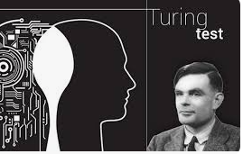

1950 Alan Turing proposes the Turing test
1956 John McCarthy coins "Artificial Intelligence"
1966 ELIZA chatbot introduced
1974 Expert Systems emulate decision making
1990 Loebner Prize
1990 machine learning
1997 IBM's Deep Blue defeats Gary Kasparov
2011 IBM's Watson defeats top Jeopardy! champions
2012 Neural networks gain traction
2016 Alphago wins at GO
2020 Large Language Models take shape